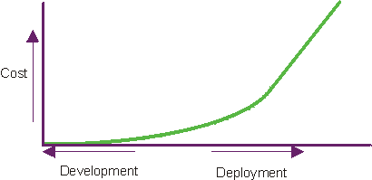

| Quality Management |
 |
|
| Related Elements |
|---|
|
 Software problems are 100 to 1000 times more costly to find and repair after deployment. Verifying and managing quality throughout the project's lifecycle is essential to achieving the right objectives at the right time. What Do We Mean by Quality Verification Throughout the Lifecycle?It's important that the quality of all artifacts are assessed at several points in the project's lifecycle as they mature. Artifacts should be evaluated as the activities that produce them complete and at the conclusion of each iteration. In particular, as executable software is produced, it should be subjected to demonstration and test of important scenarios in each iteration, which provides a more tangible understanding of design trade-offs and earlier elimination of architectural defects. This is in contrast to a more traditional approach that leaves the testing of integrated software until late in the project's lifecycle. What Is Quality?IntroductionQuality is something we all strive for in our products, processes, and services. Yet when asked, "What is Quality?", everyone has a different opinion. Common responses include one or the other of these:
Perhaps the most frequent reference to quality, specifically related to software, is this remark regarding its absence:
These commonplace responses are telling, but they offer little room to rigorously examine quality and improve upon its execution. These comments all illustrate the need to define quality in a manner in which it can be measured and achieved. Quality, however, is not a singular characteristic or attribute. It's multi-dimensional and can be possessed by a product or a process. Product quality is concentrated on building the right product, whereas process quality is focused on building the product correctly. See Concept: Product Quality and Concept: Process Quality for additional information. Definition of QualityThe definition of quality, taken from The American Heritage Dictionary of the English Language, 3rd Edition, Houghton Mifflin Co.,© 1992, 1996, is:
As demonstrated by this definition, quality is not a single dimension, but many. To use the definition and apply it to software development, the definition must be refined. Therefore, for the purposes of the Rational Unified Process (RUP), quality is defined as:
Achieving quality is not simply "meeting requirements", or producing a product that meets user needs and expectations. Rather, quality also includes identifying the measures and criteria to demonstrate the achievement of quality, and the implementation of a process to ensure that the product created by the process has achieved the desired degree of quality, and can be repeated and managed. See also the following pages for additional information on how the RUP defines the idea of quality:
Who Owns Quality?A common misconception is that quality is owned by, or is the responsibility of, one group. This myth is often perpetuated by creating a group, sometimes called Quality Assurance-other names include Test, Quality Control, and Quality Engineering-and giving them the charter and the responsibility for quality. Quality is, and should be, the responsibility of everyone. Achieving quality must be integral to almost all process activities, instead of a separate discipline, thereby making everyone responsible for the quality of the products (or artifacts) they produce and for the implementation of the process in which they are involved. Each role contributes to the achievement of quality in the following ways:
Everyone shares in the responsibility and glory for achieving a high-quality product, or in the shame of a low-quality product. But only those directly involved in a specific process component are responsible for the glory, or shame, for the quality of those process components (and the artifacts). Someone, however, must take the responsibility for managing quality; that is, providing the supervision to ensure that quality is being managed, measured, and achieved. The role responsible for managing quality is the Project Manager. Common Misconceptions about QualityThere are many misconceptions regarding quality and the most common include:
Quality can be added to or "tested" into a productJust as a product cannot be produced if there is no description of what it is, what it needs to do, who uses it and how it's used, and so on, quality and its achievement cannot be attained if it's not described, measured, and part of the process of creating the product. See Concept: Measuring Quality and the section of this document titled Quality happens on its own. Quality is a single dimension, attribute, or characteristic and means the same thing to everyoneQuality is not a single dimension, attribute, or characteristic. Quality is measured in many ways-quality metrics and criteria are established to meet the needs of project, organization, and customer. Quality can be measured along several dimensions-some apply to process quality; some to product quality; some to both. Quality can be measured for:
See Concept: Quality Dimensions, Concept: Product Quality, and Concept: Process Quality for additional information. Quality happens on its ownQuality cannot happen by itself. For quality to be achieved, a process is must be implemented, adhered to, and measured. The purpose of the RUP is to provide a disciplined approach to assigning tasks and responsibilities within a development organization. Our goal is to ensure the production of high-quality software that meets the needs of our users, within a predictable schedule and budget. The RUP captures many of the best practices in modern software development in a form that can be tailored for a wide range of projects and organizations. The Environment discipline gives you guidance about how to best configure the process to your needs. Processes can be configured and quality-criteria for acceptability-can be negotiated, based upon several factors. The most common factors are:
Changes in the process and criteria for acceptability should be identified and agreed upon at the outset of the project. Management of Quality in the RUPManaging quality is done for these purposes:
Managing quality is implemented throughout all disciplines, workflows, phases, and iterations in the RUP. In general, managing quality throughout the lifecycle means you implement, measure, and assess both process quality and product quality. Some of the efforts expended to manage quality in each discipline are highlighted in the following list:
|

© Copyright IBM Corp. 1987, 2006. All Rights Reserved. |